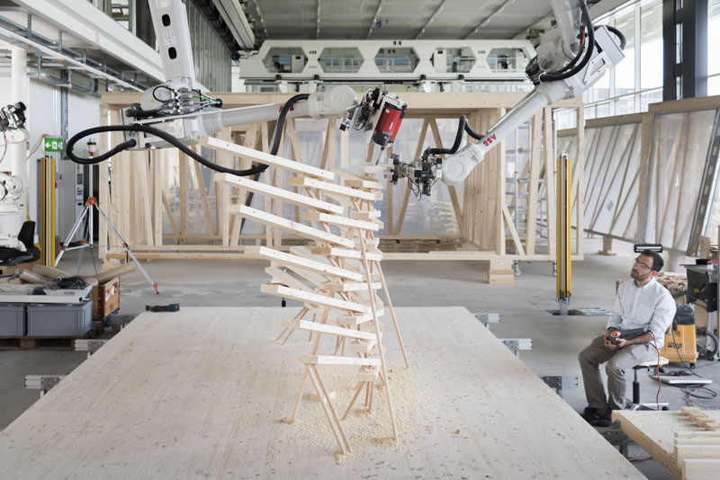
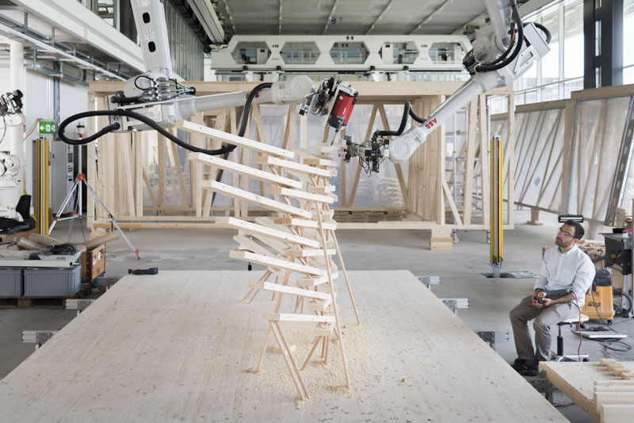

Topographies of Light (MIT, 2023)

This project is conducted as part of an independent teaching activity (IAP) at MIT,
a site of multiplicities involving several internal and external collaborators
across disciplines. While the initial brief started as a techno-rationalist design exercise of wooden
typographies - a product of material, processing, and other technical constraints - MIT's protocol
(including the involvement of Prof. Kilian and other potential scanning-devices) positively influenced it
towards Light Clouds,
which find themselves in the setting of constraints. The quasi-allegorical form - reminiscent of a historical collaboration that turns
into an interdisciplinary exchange with the Media Lab - fosters
an internal and external dialogue of fluid paths (e.g., circuits, circulations, etc.) and force fields (e.g., connections, spaces, etc.),
simultaneously merging into mathematically offset curves modulated across connected layers
of translucent and opaque shades.
A relevant value of this sort of Asiatic sense does not reside in the gestural possibility of an animated object
but in its potential as an architecture, the exploration of a multiplicity of precisely indeterminate habitats.
Formally, the object announces a new territory of implicit degradation of property: the roof becomes a wall, the structure fuses with the surface,
the openings emerge and merge into the temporal register of the overall design. All delineations of Modernist rationality dissolve in the seamless
and reciprocal processing of the inexpressive fluid family of designs, contemplating their non-standard post-industrial manufacturing nature.
 
